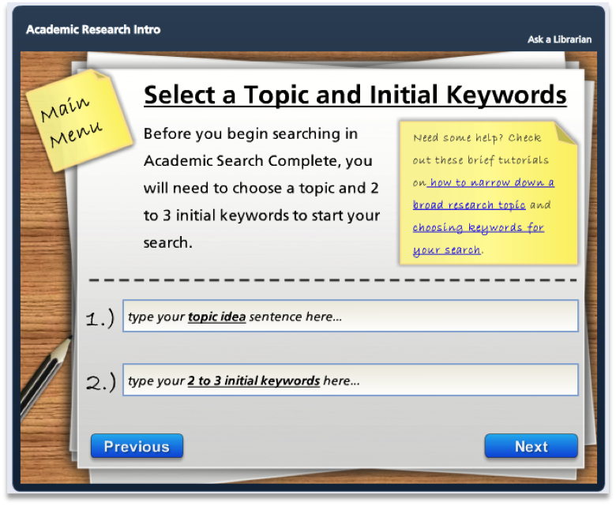
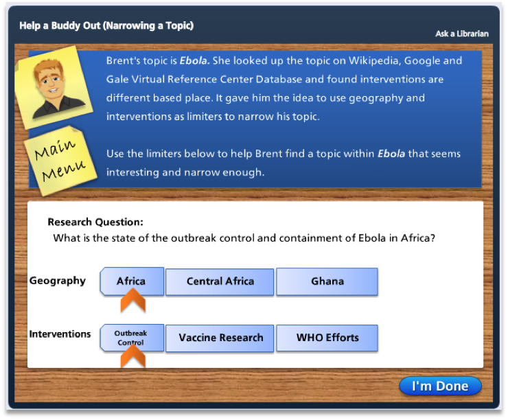
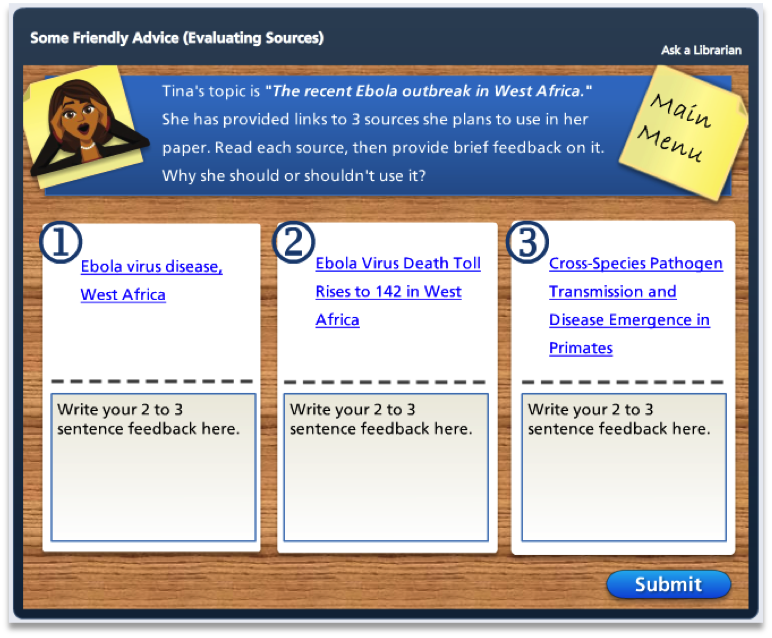

About the Project
These modules were developed to provide students with just in time learning of simple but nonintuitive tasks.
Academic Research Introduction
Intended to provide a brief introduction to academic research. A video explains types of sources, a screencast tutorial demonstrates how to search Academic Search Complete, and students have the opportunity to practice search for an article related to their topic. This information is saved to the D2L course site for review by the instructor and librarian.
Try it now »
Narrowing a Topic
This brief tutorial shows students how to find Lexis on Lexis Advance.
Try it now »
Evaluating Sources
In this scenario based activity, students are asked to help 4 of their classmates evaluate 3 sources they are considering using for their paper. Students can read the entirety of each source, then write a 2 to 3 sentence explanation of why their classmate should or shouldn’t use the source and why. Based on the concept of Calibrated Peer Review, there is one exemplar source, one substandard source and one bubble source.
Try it now »
Academic Library Hangperson
Try it now »